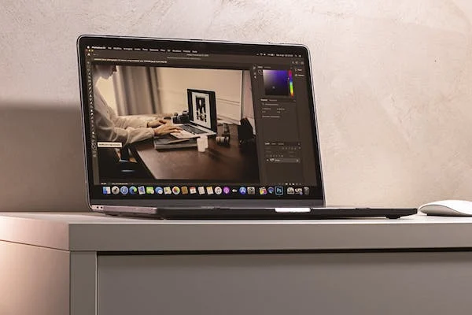
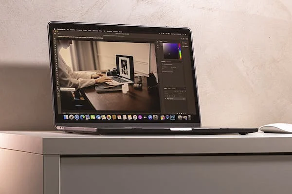

Paginas para hacerse notar
¡Descubre un mundo encantador lleno de nostalgia y estilo en nuestro blog personal dedicado a las páginas vintage! Sumérgete en un viaje a través del tiempo, reviviendo la elegancia y el encanto de épocas pasadas en cada página que creamos. Desde diseños retro hasta colores evocadores, te guiaremos para capturar la esencia de lo clásico en la era digital. ¡Únete a nosotros y da vida a tus ideas vintage en la web!